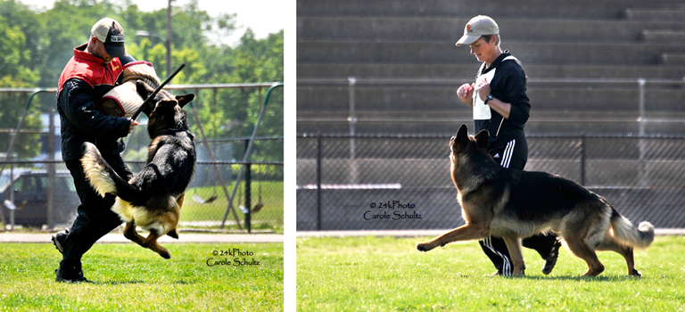

News Archives : 2011 : Erin O'Shea's Dog Zambo Wins World Championship
by Cathryn Delude
July 12, 2011
Erin O'Shea is a world leader in studies of gene regulation, but a world champion? That’s a title reserved for her German Shepherd, Zambo, fresh back from an international competition called the Universal Sieger in Austria this June. Sieger is German for winner, and Zambo was the overall winner of this two-part championship, which involved a “best of breed” conformation show evaluating his physical perfection and a Schutzhund trial, testing his tracking, obedience and protection skills.
O’Shea does get a little credit, though. In addition to being a Professor of Molecular and Cellular Biology and of Chemistry and Chemical Biology, the Director of the FAS Center for Systems Biology and a Howard Hughes Medical Institute Investigator, she has handled and trained Zambo from the time he was a puppy.
When she and her husband first got Zambo in January 2007, they expected him to be just a pet. But a researcher in her lab, Borya Shakhnovich, was taking his German Shepherd for Schutzhund training in Boston, and O’Shea decided to use the same trainer for puppy lessons. For fun, she entered Zambo in conformation shows where the puppies walk around the ring and the judges rate their anatomy. “Zambo did really well, and the shows were great social events,” O’Shea recalls. Soon she also entered Zambo in some Schutzhund trials. “I just dipped my toes in and tried it. We had a good time, and he did well, so we just kept doing it.”
The Schutzhund (German for protection dog) trial originated in Germany in 1901 and is a popular sport for German Shepherds, and a means to evaluate their breed-worthiness. German Shepherds were herding dogs, but with industrialization, they were used as police and military dogs, and that required rigorous training and also careful breeding selections for, among other qualities, obedience, intelligence, trainability, courage, temperament and “mental stability.” There are three increasingly challenging levels of Schutzhund trials, each involving tracking, obedience, and protection.
Training Zambo for the obedience phase just took 10 to 20 minutes a day and involved teaching him heeling exercises, commanding him to sit, lie down, stand, retrieve, etc. But the tracking training took an hour several times a week out in a field. First, O’Shea walked around, placing objects along the way. Later Zambo had to follow her meandering path and retrieve her objects. “The epithelial cells just fall off of you while you walk, and the dog also smells the scent of crushed vegetation,” she notes.
For the protection phase, the dog must search in hiding places and find, guard or attack a hidden person (decoy) – and stop upon command. This requires a specially trained helper/decoy who wears a reinforced sleeve on the arm that the dog must grip with the back of his mouth. Dogs are at their peak at these skills when they are 5-6 years old. So after Zambo began winning at this event on the local level when he was just 3, O’Shea started getting serious, taking Zambo every week on a five-hour drive to New Jersey for a 6-hour session – and back on the same day.
In 2009, Zambo earned a level II Schutzhund title in Germany, and that qualified him to enter the U.S. National Sieger Show, a conformation show, where he placed 8th in November 2009. This past May he came in first in the National Universal Sieger Championships, with the best combined score from the conformation show and Schutzhund trial. That qualified Zambo for the U.S. team at June’s Universal Sieger World Championship in Austria – where he earned the top trophy. “It is unusual for an American dog, and a dog so young, to win this championship,” says O’Shea, who plans to keep Zambo competing – although there is no higher-level prize to win.
Between her lab and teaching duties and the Schutzhund training sessions, O’Shea had little time for training for the conformation shows. “It’s like bodybuilding. You exercise the dog in a way to build muscles, like having him pull a tire uphill,” O’Shea explains. But she plans to take Zambo to a conformation show in Germany after Labor Day, so now she swims with him for an hour in a lake and bicycles with him several times a week.
Regarding Zambo’s world championship, he receives no prize money, just glory – and his added desirability for breeding. He had already sired 15 litters, and a number of O’Sheas (including Erin) now have Zambo’s puppies. Zambo himself comes from a fine, well-documented pedigree. His full name is Zambo vom Riedschlurgi, based on a German tradition of bestowing the last name of the kennel that breeds the dogs. His sister is Zora. “Every dog in the litter starts with the same letter of the alphabet, and this litter happened to be Z,” explains O’Shea, “Names can never be repeated, so the next time Z comes around, they’ll just have to find some other Z names. There can never be another Zambo.”
[July 12th, 2011]
